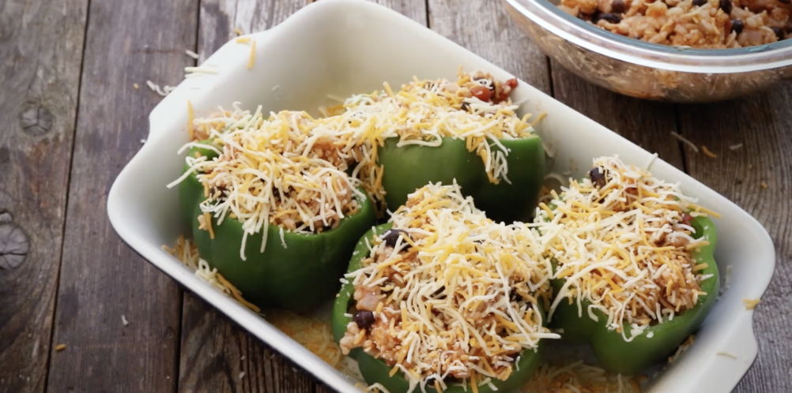

Stuffed Peppers Vegetarian

Vegetarian stuffed peppers are tender and slightly sweet, filled with savory grains, beans,
and veggies, creating a warm, hearty flavor with a hint of smokiness.
Ingredients
- Salt
- 4 Large Green Bell Peppers
- Olive Oil
- Chopped Onion
- Cooked Rice
- Black beans
- Tomatoes
- Chili Powder
- Garlic Salt
- Mexican Cheese
Directions
- Preheat Oven to 350 degrees F
- Bring a large pot of water and 1 tablespoon salt to a boil.
Add green bell peppers and cook until slightly softened, 3 to 4 minute.
- Drain bell peppers and arrange cut-side up in a 9x9-inch baking dish
- Heat olive oil in a skillet over medium heat.
Add onion; cook and stir until softened, 5 to 10 minutes
- Transfer cooked onion into a large bowl; add rice, black beans, and tomatoes. Stir in chili powder, garlic salt, cumin,
and 1/2 teaspoon salt until well combined. Fold in 1 1/2 cups Mexican cheese blend
- Spoon rice mixture evenly into bell peppers; sprinkle with remaining Mexican cheese blend
- Bake in the preheated oven until cheese is melted and bubbling, about 30 minutes
ENJOY !!!